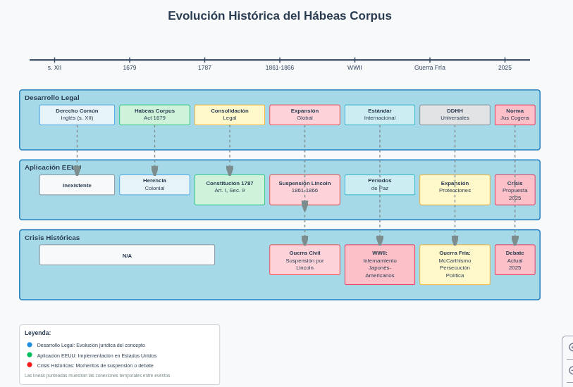
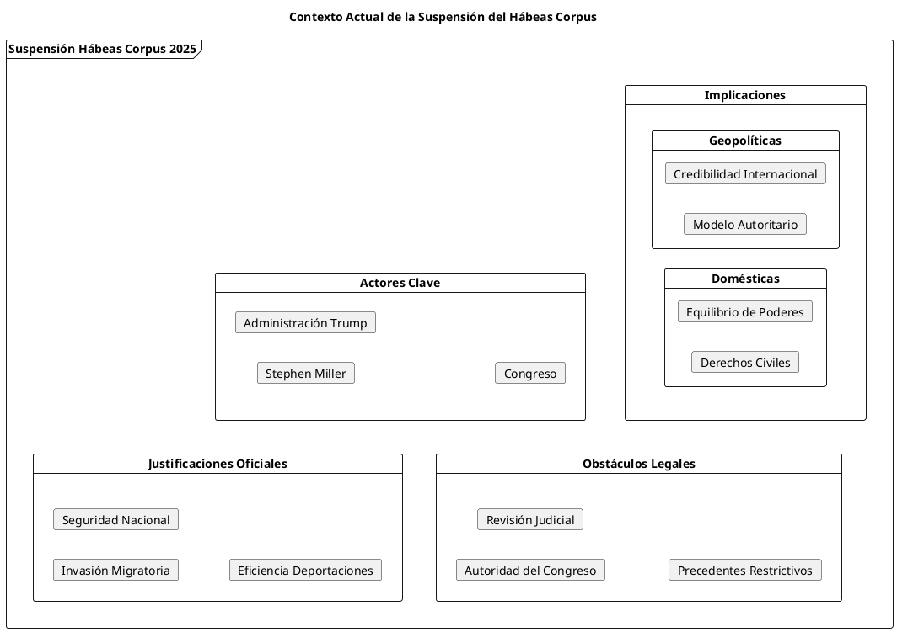
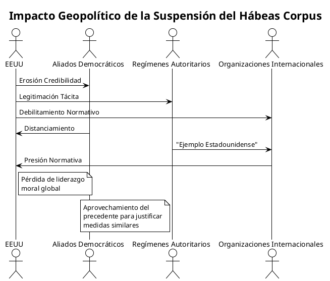
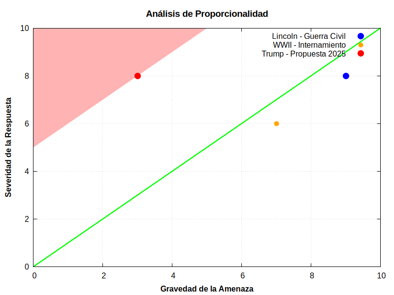

El Hábeas Corpus bajo Asedio: Análisis Crítico de las Intenciones de la Administración Trump
El Hábeas Corpus bajo Asedio: Análisis Crítico de las Intenciones de la Administración Trump
Introducción: El "Gran Mandato" en Peligro
La administración Trump ha puesto sobre la mesa una de las medidas más controvertidas en la historia constitucional reciente de Estados Unidos: la suspensión del hábeas corpus, procedimiento legal fundamental que permite a las personas desafiar su detención en tribunales. Stephen Miller, subjefe de gabinete de la Casa Blanca, confirmó que "la administración Trump está considerando activamente" la opción de suspender el hábeas corpus, marcando un punto de inflexión que trasciende la política migratoria para adentrarse en territorio constitucional inexplorado desde la Guerra Civil estadounidense.
Esta medida, presentada como parte del plan de deportaciones masivas, representa mucho más que una herramienta migratoria: constituye una redefinición del equilibrio de poderes y una prueba de estrés para las instituciones democráticas estadounidenses con implicaciones geopolíticas globales.
Génesis y Evolución Histórica del Hábeas Corpus
Orígenes Medievales y Consolidación Anglosajona
El hábeas corpus (literalmente "que tengas el cuerpo") emerge en el derecho inglés medieval como salvaguarda contra la detención arbitraria. Su codificación en el Habeas Corpus Act de 1679 estableció el principio fundamental: ninguna autoridad puede mantener a una persona detenida sin justificación legal revisable por tribunales independientes.

Incorporación al Marco Constitucional Estadounidense
Los Padres Fundadores, conscientes de los abusos del poder real británico, incorporaron explícitamente la protección del hábeas corpus en el Artículo I, Sección 9 de la Constitución: "El privilegio del mandato de hábeas corpus no será suspendido, excepto cuando en casos de rebelión o invasión la seguridad pública lo requiera".
Esta formulación revela la tensión inherente: reconoce tanto la importancia fundamental del derecho como la posibilidad excepcional de su suspensión bajo circunstancias extremas.
Precedentes Históricos de Suspensión: Lecciones del Pasado
La Era Lincoln: Paradigma de la Suspensión Constitucional (1861-1866)
El 27 de abril de 1861, Abraham Lincoln suspendió el hábeas corpus entre Washington D.C. y Filadelfia para otorgar a las autoridades militares el poder necesario para silenciar disidentes y rebeldes. Esta decisión, inicialmente limitada geográficamente, se expandió progresivamente.
Impacto y Controversias
Durante la Guerra Civil, Lincoln suspendió el hábeas corpus en ocho ocasiones, generando tensiones constitucionales profundas. El caso Ex parte Merryman (1861) enfrentó al Ejecutivo con el Poder Judicial, cuando el Presidente del Tribunal Supremo Roger Taney declaró inconstitucional la suspensión unilateral presidencial.
Otros Precedentes Significativos
| Período | Contexto | Alcance | Justificación |
|---|---|---|---|
| 1871-1872 | Ku Klux Klan Acts | Regional (Sur) | Terrorismo doméstico |
| 1942-1945 | WWII | Específico (Japoneses-americanos) | Seguridad nacional |
| 1950s | Guerra Fría | Limitado | Amenaza comunista |
Análisis de la Propuesta Actual: Contexto y Motivaciones
Marco Político y Declaraciones Oficiales
Stephen Miller declaró que la administración Trump está "considerando activamente" suspender el hábeas corpus, enmarcando esta medida dentro de la política migratoria y el plan de deportaciones masivas. La administración argumenta que el término "invasión" en la Constitución se aplica a la situación migratoria actual.

Limitaciones Constitucionales y Legales
El hábeas corpus solo puede ser suspendido por el Congreso, no por decisión ejecutiva unilateral. Esta limitación, establecida por precedentes jurisprudenciales posteriores a Lincoln, constituye un obstáculo significativo para cualquier intento presidencial.
Análisis Comparativo: Entonces vs. Ahora
| Aspecto | Lincoln (1861) | Trump (2025) |
|---|---|---|
| Contexto | Guerra Civil abierta | Crisis migratoria |
| Amenaza | Rebelión armada confirmada | "Invasión" migratoria (disputada) |
| Autorización | Posteriormente ratificada por Congreso | Sin autorización congressional |
| Alcance | Nacional, todos los delitos | Potencialmente solo casos migratorios |
| Precedente Legal | Territorio inexplorado | Doctrina restrictiva establecida |
Implicaciones Geoestratégicas: Estados Unidos en el Tablero Global
Erosión del Soft Power Estadounidense
La suspensión del hábeas corpus tendría ramificaciones que trascienden las fronteras estadounidenses. Estados Unidos ha basado gran parte de su legitimidad hegemónica en la promoción del estado de derecho y los derechos humanos. Una medida de esta magnitud:
- Debilita la credibilidad moral en foros internacionales
- Proporciona argumentos a regímenes autoritarios para justificar sus propias violaciones
- Erosiona alianzas basadas en valores democráticos compartidos
Precedente Autoritario Global

Reconfiguración del Orden Liberal Internacional
La medida podría acelerar la transición hacia un orden multipolar donde:
- China capitaliza la erosión del modelo democrático occidental
- Rusia ve legitimadas sus críticas al "excepcionalismo" estadounidense
- Europa se ve forzada a tomar distancia para preservar su credibilidad normativa
Evaluación Crítica: Riesgos y Alternativas
Análisis de Proporcionalidad
La suspensión del hábeas corpus representa una respuesta extraordinaria que requiere amenazas extraordinarias. El análisis de proporcionalidad revela:
Severidad de la Medida vs. Naturaleza de la Amenaza

Alternativas Menos Restrictivas
La administración podría considerar medidas alternativas que preserven tanto la seguridad como los derechos fundamentales:
- Reforma del sistema de tribunales de inmigración
- Expansión de jueces especializados
- Procedimientos expeditos con garantías procesales
- Uso de tecnología de monitoreo
- Alternativas a la detención física
- Sistemas de localización electrónica
- Cooperación internacional reforzada
- Acuerdos bilaterales de repatriación
- Programas de desarrollo en países de origen
Conclusiones: El Hábeas Corpus como Barómetro Democrático
La propuesta de suspensión del hábeas corpus por parte de la administración Trump trasciende el ámbito de la política migratoria para convertirse en una prueba definitiva del estado de la democracia estadounidense. Históricamente, las suspensiones de este derecho fundamental han marcado momentos de inflexión en la historia nacional, desde la Guerra Civil hasta los excesos de seguridad nacional del siglo XX.
Implicaciones Sistémicas
- Constitucionales: La medida desafía el equilibrio de poderes establecido y puede sentar precedentes peligrosos para futuras administraciones
- Geopolíticas: Erosiona la capacidad de Estados Unidos para liderar el orden liberal internacional basado en el estado de derecho
- Democráticas: Representa un test de estrés para las instituciones que han servido como guardianes de los derechos fundamentales
Reflexión Final
El hábeas corpus ha servido durante siglos como la "palladium of liberty" (protección de la libertad), en palabras de Blackstone. Su suspensión, aún en circunstancias excepcionales, requiere no solo justificación legal sino también legitimidad democrática amplia. La historia enseña que los poderes extraordinarios, una vez ejercidos, tienden a normalizarse y expandirse.
En un momento de reconfiguración del orden global, Estados Unidos enfrenta una elección fundamental: reafirmar su compromiso con los principios que han sustentado su liderazgo moral, o acelerar la transición hacia un mundo donde la fuerza prima sobre el derecho. La decisión sobre el hábeas corpus no es meramente técnica; es profundamente política y definirá el legado de esta administración en la historia constitucional estadounidense.
La comunidad internacional observa. Los aliados evalúan. Los adversarios se posicionan. Y la historia juzgará si Estados Unidos en 2025 eligió el camino de la excepción o el de la continuidad democrática.
—
Referencias Documentales e Históricas:
- Constitución de los Estados Unidos, Artículo I, Sección 9
- Ex parte Merryman, 17 F. Cas. 144 (C.C.D. Md. 1861)
- Habeas Corpus Suspension Act, 12 Stat. 755 (1863)
- Ex parte Milligan, 71 U.S. 2 (1866)
- Proclamación Presidencial 94 (1862) - Abraham Lincoln
- Korematsu v. United States, 323 U.S. 214 (1944)
- Declaraciones de Stephen Miller, Casa Blanca (Mayo 2025)
- CNN Politics, "Trump involved in discussions over suspending habeas corpus" (Mayo 2025)
- The Washington Post, "Trump administration 'actively looking at' suspending habeas corpus" (Mayo 2025)
Blackstone, William. Commentaries on the Laws of England (1765-1769)